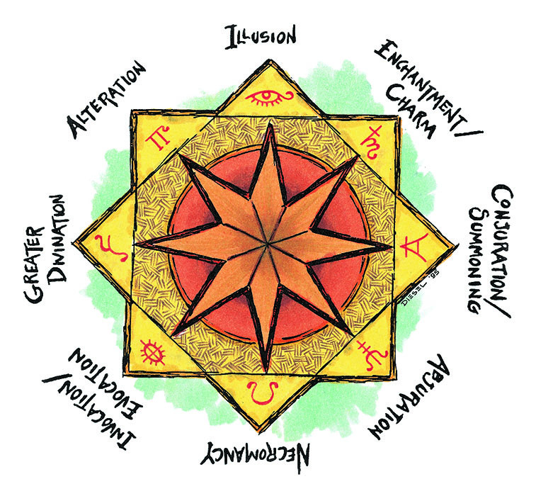

魔法学派
魔法学派（The Schools of Magic）
依据其所使用的魔法能量种类，法术可被分为九个不同的类别，或者说，学派。每个学派都有其独有的理论与技法。
尽管被称作学派，但魔法学派并不是个可以让人去学习的有组织的地方。“学派”这个词所指的是魔法的流派。学派所强调的是特定种类法术的使用与施法方式。某个魔法学派的修习者或许会建立魔法学院以传授其所学，但这并非必要。许多强大的法师都曾在偏远地方隐居的大师手下学习，并以此习得了操纵魔法的手法。
魔法的九大学派是防护（Abjuration），转化（Alteration），咒法/召唤（Conjuration/Summoning），附魔/魅惑（Enchantment/Charm），高等预言（Greater Divination），幻术（Illusion），祈唤/塑能（Invocation/Evocation），死灵（Necromancy）与次等预言（Lesser Divination）。

上面的方阵描述了学派之间的对立关系。见表格22及其条目描述以获得更多信息。
在这些学派中有八个高等学派，而第九个的次等预言学派则是一个次等学派。该次等学派包含所有法术等级不高于四的预言法术（所有法师都可修习）。高等预言学派包含那些法术等级不低于五的预言法术。